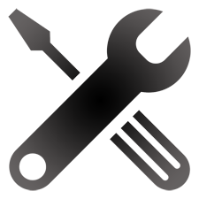

Services We Provide
Premium Computer Repair and Services
Please click on a link below to learn more about what we can do for you.
WHEN YOUR COMPUTER WON’T COOPERATE
Is your computer running the way it should? Is your hard drive making funny noises? Looking to get a new DVD Burner but not sure how to install it? Have you installed it and its just not working correctly? The Computer Café can help!
Our experienced and knowledgeable staff offers you a personalized service that you won’t find elsewhere.
- Virus & Spyware Removal
- Computer Freeze-Up Repair
- Data Recovery from Hard Drive Crash
- Data Transfer to New Computer
- Hardware Repair
- System Optimization
- Data Backup
- Operating System Repair/Reinstallation
- Software Installation & Configuration
- Pick up & Delivery Available
APPROVALS:
Cost of in shop repairs will not exceed $100 unless approved by customer. Parts needed for completion of repair will not be ordered until approved by the customer.
WHAT TO BRING
DESKTOPS:
You need bring only the computer tower to the shop. Power cords, monitors, cables, printers, etc do not need to be brought in unless you are having a specific problem with the peripheral.
LAPTOPS:
Bring your laptop and the powercord to the shop when you bring you computer in for repair.
DISKS & SOFTWARE:
For most repairs we do not need your software disks.
But, if the operating system needs to be reinstalled we will need at least the Windows software. This happens if the hard drive has to be replaced and occasionally in a very bad virus situation. If you’re not sure, we suggest that you bring in the disks with the computer. We prefer to use the original disks whenever possible as they were configured for your specific hardware but if you can’t locate the original disks we have installation disks that we can use. Regardless,we do need your license information which is generally in a sticker on your computer. You may also wish to have us reinstall your other software. Examples of this include Microsoft Word, Excel, Quicken, and Family Tree Maker. To reinstall these programs we will need the original disks and the installation key. If you downloaded the software we will need the login information and site URL for the program.
DON’T FORGET:
Be sure to tell us everything that seems to be wrong with your computers. Don’t be shy about bringing a list. Also, if your computer is password protected we’ll need your password too.
BUSINESS SERVICES
Our IT support technicians are well-trained and experienced in technology support.
For the wide variety of services we offer, our specialists are capable of handling anything the IT world can throw at them.
The experience of our staff sets them apart from others. From server installation to virus prevention, our team has the tools and the knowledge to complete any task.
With our experience we have formed relationships with other industry professionals. If there is ever a problem we cannot solve, we know someone who can.
For more information about services for businesses please contact us at 724-776-5860.
BEST PRACTICES
VIRUS & SPYWARE PREVENTION:
Did you know that most computer infections come as the result of simply opening a web page? At The Computer Café we regularly see computers that are seriously infected. While we have found that nothing is 100% effective there are some things that you can do:
- Install AntiVirus software and be sure to keep the subscriptions current.
- Install Microsoft Windows Security Updates as they are released, turn automatic updates on.
- Don’t stray too far off the reservation. “Sin” sites such as gambling, file sharing and pornography are rife with viruses.
- Beware of “spoofs”. If you see a popup indicating that you have a virus and to “click here” to fix it. DON’T! Usually these “fixes” are actually viruses.
- If you suspect that you have a virus, address it as soon as possible. Just because your Antivirus doesn’t recognize that there is a problem doesn’t mean that you’re okay.
BACK UP YOUR DATA:
Everyone has heard about losing data in a computer crash or as the result of a virus, and that backup is one of the most powerful ways to protect against this. While backups will not save your computer from crashing, or keep viruses from being able to infect it, a backup will ensure that if something does happen to your computer you will still have access to the files that are important to you. And, it’s easier than you think! One of the best solutions is to use a cloud based backup service, or you may choose from a variety of external storage devices.
INVENTORY YOUR SOFTWARE:
In addition to backing up your data you should be prepared to reinstall your software. For most software the two items that you will need are the installation files and the license key.
- If you received disks when you purchased your software, be sure to keep them in a safe place. Notice where the license key is located and be sure not to toss it out with the packaging. It should be kept with the disks.
- If you downloaded your software, you probably got a e-mail with the license key. Print it out and save it with your software disks. You will probably be able to download the software again but if your computer has a CD or DVD burner you might want to burn a copy to a disk and keep that too.
OUR POLICIES
DATA:
Due to the volatile nature of computer repairs, the Computer Cafe is not responsible for ANY LOSS OR CORRUPTION OF DATA or SOFTWARE before, during or after repairs.
TURNAROUND:
Repairs will be done on a first come, first serve basis. (Standard) turnaround time for repairs is 2 to 4 business days based on the size of the repair queue. Repairs requiring special ordered parts could take longer.
PAYMENT:
A deposit of $31.00 is required when you drop off your computer. This deposit will be deducted from the total cost of repair services.
Final payment for repairs is due when the computer is picked up unless other arrangements are made in advance.
Payment for special orders of computer equipment is due when the order is placed.
We accept cash, check, Visa, MasterCard, Discover and American Express.
APPROVALS:
Cost of in shop repairs will not exceed $100 unless approved by customer. Parts needed for completion of repair will not be ordered until approved by the customer.
PICK UP:
We will notify you when your computer has been repaired and is ready for pickup. Please pick up your computer within one week of completion of repairs. Computers / equipment that are left for more than 30 days without prior approval will be considered abandoned and will be recycled or donated to a charitable organization.
REPAIR WARRANTY:
All repairs are covered under our 30 day limited warranty starting from completion of work. Parts purchased from us may also carry manufacturer’s warranties. In order to pursue any remedy under this limited warranty, you must return your computer to our location. We will undertake to repair issues that remain unresolved. Any parts required, other than those sold as part of the original repair, are not covered under this limited warranty. Problems with repairs within 30 days that are due to virus and/or spy-ware infections are subject to our Virus & Spyware Removal Policy below. All warranty work will be done in a standard repair turnaround.
VIRUS & SPYWARE REMOVAL:
Virus and spyware removal are the most frequent requests that we receive. With virus & spyware removal there is always a tradeoff between getting all vestiges of the virus removed and preserving the files and programs that you count on.
Our general policy is to remove virus & spyware without reinstalling the operating system. Although there is some risk that all viruses will not be completely removed there is significantly less disruption for our clients.
If the virus infection is severe, operating system reinstallation may be the only viable option. While is it not common for viruses to persist after reinstalling the operating system it can still occur. This is usually because a file or e-mail that you wish to preserve contained an undetected virus.
What we warranty. If we removed viruses without reinstalling the operating system on your computer and the same viruses reappear within 15 days we recommend an operating system reinstallation. In this case, the charges you paid for the initial virus removal will be deducted from the reinstallation charge.
Call For Details (724) 776-5860
eCycling Services
The Computer Café serves as a collection point for eLoop’s eCycling services.
Becoming an eCycling partner with eLoop allows The Computer Café to offer to our customers and the local area a convenient location where they can responsibly dispose of old electronic equipment. The need for proper disposal of this type of waste is becoming more and more evident. Recognizing the toxic content of electronic equipment we feel obligated to provide an alternative to our community. Being an IT provider, we understand the potential risk involved where confidential data storage is concerned and the need for a way to ensure secure disposal of that data storage. eLoop is the 1st Certified BAN e-Stewards Recycler in Pennsylvania. The Basel Action Network maintains the highest recycling standards in the industry and prohibits illegal exports to developing countries, the use of landfills for dumping, or deploying prison labor.
Questions? Check eLoops’s FAQs
We DO NOT ACCEPT anything over 35 lbs. We suggest eLoop Plum Warehouse for those items.
ACCEPTED ELECTRONIC DEVICES:
- Desktop, Laptop Notebooks, Servers and Tablets (PC’s)
- Monitors (CRT’s, LCD’s, LED’s)
- Computer Peripherals: Keyboards, Mice, Computer Speakers and all external devices
- i.e.: CD/DVD/Blu-ray ROM / Burners, Scanners, Wireless routers / switches / Modems and External Tape, Optical and Hard Disc Drives.
- Printers: All Desktop Printers, Inkjet, All in ones and Lasers.
- VCR’s, DVD and Blu-ray players.
- Stereo equipment (Receivers, Amplifiers, Car Stereos, Boom Boxes…)
- Digital Cameras and Camcorders (Video)
- Telephones, Cell Phones / PDA’s Smart Phones And MP3 Players
- All Electronic Cables (Wiring) Video Games and Consoles / Controllers
- UPS Systems (Uninterruptible Power Supply) Battery Back Up
WE DO NOT ACCEPT:
- Televisions
- Lamps: Fluorescent Lighting, Incandescent, Halogen, Mercury Vapor, and HID’s
- Media: CD’s DVD’s, Floppy Disks, Magnetic Tape (Audio, Video or Data)(VHS, DAT, Cassette, LTO, ATI and Reel)
- Freon Containing Appliances (Small A/C Units, Dehumidifiers)
- Household Batteries: Lithium Ion, NiCad, NiHM and Alkaline
- Home Thermostats, Thermometers (Mercury contain devices)
- Small Kitchen Appliances (Mixers, Toasters, Blenders…)
- Microwaves
- Hair Dryers, Curling Irons (Beauty Aids / Appliances)
- Large Speakers (Book shelf and above in size)
- Large Copy Machines / Fax Machine
- Hazardous Waste or Radioactive Waste. Example: Smoke Detectors
THIS INFORMATION MAY CHANGE WITHOUT NOTICE!
Call for Details (724) 776-5860
